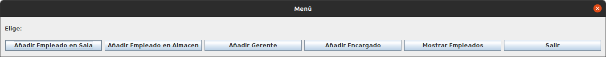

MAIN DEL PROGRAMA
En el main se ha creado un Array de Empleado usando el polimorfismo para añadir objetos de clases que heredan de Empleado dinámicamente y los añadimos a un HashMap.
Seguidamente hay un menú hecho con las librerias JOptionPane en el que tendremos la opción de añadir cualquier tipo de Empleado y mostrarlo por la consola del IDE.
El método declarado en el main buscarEmpleado() sirve para buscar por un nombre si este existe dentro de la lista de empleados.
import java.util.LinkedList;
import java.util.HashMap;
import java.util.InputMismatchException;
import java.util.Scanner;
import javax.swing.JOptionPane;
import java.util.regex.*;
public class DAM1SanchezVega_LuisMiguel202306ProyectoFinal_TiposEmpleadosTienda {
/**
* @param args the command line arguments
*/
public static void main(String[] args) {
// CREAMOS LA TIENDA Y EL ALMACEN
Tienda tiendaInicial;
Almacen almacenInicial = new Almacen();
// Le asignamos una letra al almacen
almacenInicial.setLetraIdentificativa('A');
// Creamos un Array con los diferentes departamentos de la tienda dinamicamente.
Departamento[] arrDepartamentos = {
new Departamento(new LinkedList<>(), "Ventas"), // Departamento '0'
new Departamento(new LinkedList<>(), "Compras"), // Departamento '1'
new Departamento(new LinkedList<>(), "Marketing"), // Departamento '2'
new Departamento(new LinkedList<>(), "Personal") // Departamento '3'
};
// Creamos una lista para almacenar los departamentos
LinkedList<Departamento> departamentos = new LinkedList<>();
// Añadimos los elementos del Array de Departamentos a la lista
for (int i = 0; i < arrDepartamentos.length; i++) {
departamentos.add(arrDepartamentos[i]);
}
// CREACIÓN DE EMPLEADOS
// Creamos al Gerente de la Tienda y el Almacen.
Gerente gerenteInicial = new Gerente("Luis", "C/Picasso 5", 2100, new LinkedList<>(), departamentos.get(1), "control de Stock");
// Creamos un Array de los Empleados de la Tienda dinamicamente
Empleado[] arrEmpleadosTienda = {
new EmpleadoSala("Marta", "C/Lorca 6", 1100, new LinkedList<>(), "Caja"),
new EmpleadoSala("Carlos", "C/Genesis 6", 950, new LinkedList<>(), "Reponedor"),
new EmpleadoSala("Andrea", "C/DaVinci 12", 1200, new LinkedList<>(), "Seguridad"),
new Encargado("Miguel", "C/Dali 45", 1850, new LinkedList<>(), departamentos.get(3)),
new EmpleadoAlmacen("Lucia", "C/Gogh 4", 1200, new LinkedList<>(), almacenInicial),
new EmpleadoAlmacen("David", "C/Pollock 2", 1100, new LinkedList<>(), almacenInicial),
new EmpleadoAlmacen("Beatriz", "C/Vermeer 10", 1100, new LinkedList<>(), almacenInicial)
};
// Creamos Mapas para meter a los Empleados de la Tienda
/*
He elegido usar mapas para almacenar los empleados ya que el sistema 'clave-valor' hace más sencillo el buscar objetos.
*/
HashMap<Integer, Empleado> mapaEmpleados = new HashMap<>();
// Añadimos los elementos del Array a los mapas
for (int i = 0; i < arrEmpleadosTienda.length; i++) {
mapaEmpleados.put(i, arrEmpleadosTienda[i]);
}
// Añadimos todo el contenido en la Tienda
tiendaInicial = new Tienda("ElCorteIngles", mapaEmpleados, departamentos, gerenteInicial);
// Creamos otra lista en la que se almacenarán las tiendas registradas y añadimos la creada por defecto
LinkedList<Tienda> tiendasRegistradas = new LinkedList<>();
tiendasRegistradas.add(tiendaInicial);
// Variables de los menús
int select;
Tienda tiendaSeleccionada = tiendasRegistradas.get(0);
// Seleccionador de tiendas (se pueden tener más de una), por defecto se elije la creada más arriba
int contadorEmple = tiendaSeleccionada.getListaEmpleados().size();
// Lleva el recuento de claves del mapa de Empleados: Uso el tamaño del mapa para que al añadir más empleados, la clave siga desde la...
// ...última clave añadida
// Otras variables y Constantes
Scanner entrada = new Scanner(System.in);
Pattern p;
Matcher m;
String direccion = "";
final String patronDir = "C\\/[A-Za-z]+ [0-9]+";
do {
System.out.println("\nMENÚ PRINCIPAL de " + tiendaSeleccionada.getNombreTienda());
System.out.println("==========================================");
System.out.println("1) Abrir Gestión de Personal");
System.out.println("2) Asignar tareas por Departamento");
System.out.println("3) Asignar tareas por Empleado");
System.out.println("4) Monitorear Trabajadores");
System.out.println("5) Cambiar de Tienda");
System.out.println("6) Ver cantidad de personal");
System.out.println("---------------------------------");
System.out.println("0) Salir");
System.out.println("==========================================");
System.out.print("Elige una opción: ");
try {
int opcion = Integer.parseInt(entrada.nextLine());
switch (opcion) {
case 0:
System.out.println("¡Hasta luego!");
System.exit(0);
case 1:
// Menú de Gestión de Personal con JOptionPane
select = -1;// Inicializo el selector de opciones con un número diferente a 0 para que entre en el bucle del menú (cuya condición es select != 0)
// Tampoco debe ser positivo para que no esté seleccionada una opción por defecto (EJ: En select = 1 la primera opción del siguiente menú estaría elegida internamente por defecto
// en vez de dejar al usuario elegir)
while (select != 0) {
Object[] opciones = {"Añadir Empleado en Sala", "Añadir Empleado en Almacen", "Añadir Encargado", "Añadir Gerente", "Mostrar Empleados", "Atrás"};
int seleccion = JOptionPane.showOptionDialog(null, "Elige: ", "Menú", JOptionPane.DEFAULT_OPTION, JOptionPane.PLAIN_MESSAGE, null, opciones, opciones[0]);
switch (seleccion) {
case 0: // Crear EmpleadoSala
try {
System.out.print("\nEscribe el nombre del Empleado: ");
String nombre = entrada.nextLine();
do {
System.out.println("Escribe la direccion del Empleado: ");
System.out.print("Debe escribirlo con el formato \"C/NombreCalle NumeroCalle\": ");
direccion = entrada.nextLine();
// Comprobamos el formato de la dirección con una Expresión Regular
p = Pattern.compile(patronDir);
m = p.matcher(direccion);
if (m.matches()) {
} else {
System.out.println("[ERROR]: La dirección no tiene el formato correcto.");
}
} while (!m.matches());
System.out.print("Escribe el salario del Empleado: ");
double salario = Double.parseDouble(entrada.nextLine());
System.out.print("Escribe el puesto del Empleado: ");
String puesto = entrada.nextLine();
tiendaSeleccionada.getListaEmpleados().put(contadorEmple, new EmpleadoSala(nombre, direccion, salario, new LinkedList<>(), puesto));
contadorEmple++;
break;
} catch (InputMismatchException e) {
System.out.println("[ERROR]: Los datos introducidos no son del tipo esperado.");
} catch (NumberFormatException e) {
System.out.println("[ERROR]: Los datos numéricos tienen el formato incorrecto.");
}
case 1: // Crear EmpleadoAlmacen
try {
System.out.print("\nEscribe el nombre del Empleado: ");
String nombre = entrada.nextLine();
do {
System.out.println("Escribe la direccion del Empleado: ");
System.out.print("Debe escribirlo con el formato \"C/NombreCalle NumeroCalle\": ");
direccion = entrada.nextLine();
// Comprobamos el formato de la dirección con una Expresión Regular
p = Pattern.compile(patronDir);
m = p.matcher(direccion);
if (m.matches()) {
} else {
System.out.println("[ERROR]: La dirección no tiene el formato correcto.");
}
} while (!m.matches());
System.out.print("Escribe el salario del Empleado: ");
double salario = Double.parseDouble(entrada.nextLine());
System.out.print("Escribe la letra del Almacen asignado al Empleado: ");
char almacen = entrada.nextLine().charAt(0);
tiendaSeleccionada.getListaEmpleados().put(contadorEmple, new EmpleadoAlmacen(nombre, direccion, salario, new LinkedList<>(), new Almacen(tiendaSeleccionada.getGerenteTienda(), almacen)));
contadorEmple++;
break;
} catch (InputMismatchException e) {
System.out.println("[ERROR]: Los datos introducidos no son del tipo esperado.");
} catch (NumberFormatException e) {
System.out.println("[ERROR]: Los datos numéricos tienen el formato incorrecto.");
}
case 2: // Crear Encargado
try {
System.out.print("\nEscribe el nombre del Encargado: ");
String nombre = entrada.nextLine();
do {
System.out.println("Escribe la direccion del Encargado: ");
System.out.print("Debe escribirlo con el formato \"C/NombreCalle NumeroCalle\": ");
direccion = entrada.nextLine();
// Comprobamos el formato de la dirección con una Expresión Regular
p = Pattern.compile(patronDir);
m = p.matcher(direccion);
if (m.matches()) {
} else {
System.out.println("[ERROR]: La dirección no tiene el formato correcto.");
}
} while (!m.matches());
System.out.print("Escribe el salario del Encargado: ");
double salario = Double.parseDouble(entrada.nextLine());
System.out.println("Elige el Departamento que gestiona el Encargado: ");
for (int i = 0; i < tiendaSeleccionada.getDepartamentosTienda().size(); i++) {
System.out.println(i + 1 + ". " + tiendaSeleccionada.getDepartamentosTienda().get(i).getNombreDepart());
}
int depart = Integer.parseInt(entrada.nextLine());
if (depart < 0 && depart > tiendaSeleccionada.getDepartamentosTienda().size()) {
System.out.println("[ERROR]: Opción no válida.");
} else {
tiendaSeleccionada.getListaEmpleados().put(contadorEmple, new Encargado(nombre, direccion, salario, new LinkedList<>(), tiendaSeleccionada.getDepartamentosTienda().get(depart - 1)));
}
contadorEmple++;
break;
} catch (InputMismatchException e) {
System.out.println("[ERROR]: Los datos introducidos no son del tipo esperado.");
} catch (NumberFormatException e) {
System.out.println("[ERROR]: Los datos numéricos tienen el formato incorrecto.");
}
case 3: // Crear Gerente
try {
System.out.print("\nEscribe el nombre del Gerente: ");
String nombre = entrada.nextLine();
do {
System.out.println("Escribe la direccion del Gerente: ");
System.out.print("Debe escribirlo con el formato \"C/NombreCalle NumeroCalle\": ");
direccion = entrada.nextLine();
// Comprobamos el formato de la dirección con una Expresión Regular
p = Pattern.compile(patronDir);
m = p.matcher(direccion);
if (m.matches()) {
} else {
System.out.println("[ERROR]: La dirección no tiene el formato correcto.");
}
} while (!m.matches());
System.out.print("Escribe el salario del Gerente: ");
double salario = Double.parseDouble(entrada.nextLine());
System.out.print("Escribe el tipo de gestión que realiza en el Departamento el Gerente: ");
String gestion = entrada.nextLine();
System.out.println("Elige el Departamento que gestiona el Gerente: ");
for (int i = 0; i < tiendaSeleccionada.getDepartamentosTienda().size(); i++) {
System.out.println(i + 1 + ". " + tiendaSeleccionada.getDepartamentosTienda().get(i).getNombreDepart());
}
int depart = Integer.parseInt(entrada.nextLine());
if (depart < 0 && depart > tiendaSeleccionada.getDepartamentosTienda().size()) {
System.out.println("[ERROR]: Opción no válida.");
} else {
tiendaSeleccionada.getListaEmpleados().put(contadorEmple, new Gerente(nombre, direccion, salario, new LinkedList<>(), tiendaSeleccionada.getDepartamentosTienda().get(depart - 1), gestion));
}
contadorEmple++;
break;
} catch (InputMismatchException e) {
System.out.println("[ERROR]: Los datos introducidos no son del tipo esperado.");
} catch (NumberFormatException e) {
System.out.println("[ERROR]: Los datos numéricos tienen el formato incorrecto.");
}
case 4: // Ver Empleados
System.out.println("\nTABLA CON DATOS BÁSICOS DE LOS EMPLEADOS");
System.out.println("====================================================");
System.out.printf("%15s %15s %15s\n", "NOMBRE", "DIRECCION", "SALARIO");
System.out.println("====================================================");
for (int i = 0; i < tiendaSeleccionada.getListaEmpleados().size(); i++) {
System.out.printf("%15s %15s %15s€\n", tiendaSeleccionada.getListaEmpleados().get(i).getNombre(), tiendaSeleccionada.getListaEmpleados().get(i).getDireccion(), tiendaSeleccionada.getListaEmpleados().get(i).getSalario());
}
System.out.printf("%15s %15s %15s€\n", tiendaSeleccionada.getGerenteTienda().getNombre(), tiendaSeleccionada.getGerenteTienda().getDireccion(), tiendaSeleccionada.getGerenteTienda().getSalario());
System.out.println("====================================================");
System.out.println("\nLISTA CON LOS DATOS DE LOS EMPLEADOS");
for (int i = 0; i < tiendaSeleccionada.getListaEmpleados().size(); i++) {
System.out.println(tiendaSeleccionada.getListaEmpleados().get(i));
}
System.out.println(tiendaSeleccionada.getGerenteTienda());
System.out.println("");// Espacio en blanco para separar la salida de datos
break;
case 5: // Salir del menu JOptionPane
select = 0; //Reseteo la opcion seleccionada
break;
default:
System.out.println("[ERROR]: Opción no válida.");
break;
}
}
break;
case 2:
// Asignar tareas a departamentos
System.out.println("\n¿A qué Departamentos quiere asignarle tareas?");
System.out.println("==============================================");
for (int i = 0; i < tiendaSeleccionada.getDepartamentosTienda().size(); i++) {
System.out.println(i + 1 + ". " + tiendaSeleccionada.getDepartamentosTienda().get(i).getNombreDepart());
}
System.out.println("----------------------------------------------");
System.out.println("0) Volver atrás");
System.out.println("==============================================");
System.out.print("Elige una opción: ");
int opcionTareasDep = Integer.parseInt(entrada.nextLine());
// Opciones
if (opcionTareasDep < 0 && opcionTareasDep > 4) {
break;
} else if (opcionTareasDep == 0) {
break;
} else {
System.out.print("\nEscribe un nombre para la tarea: ");
String nombreTarea = entrada.nextLine();
System.out.print("Escribe la descripción de la tarea: ");
String descripcion = entrada.nextLine();
Tarea tarea = new Tarea(nombreTarea, descripcion);
tiendaSeleccionada.getDepartamentosTienda().get(opcionTareasDep - 1).getTareasDepart().add(tarea);
}
// Mostramos las tareas de cada Departamento
System.out.println("\nLISTA DE TAREAS---------------------------------");
for (int i = 0; i < tiendaSeleccionada.getDepartamentosTienda().size(); i++) {
System.out.println("DEPARTAMENTO DE " + tiendaSeleccionada.getDepartamentosTienda().get(i).getNombreDepart() + "\n" + tiendaSeleccionada.getDepartamentosTienda().get(i).getTareasDepart());
}
System.out.println("\n------------------------------------------------");
break;
case 3:
// Asignar tareas a empleados
System.out.print("\nEscribe un nombre para la tarea: ");
String nombreTarea = entrada.nextLine();
System.out.print("Escribe la descripción de la tarea: ");
String descripcion = entrada.nextLine();
Tarea tarea = new Tarea(nombreTarea, descripcion);
System.out.println("\nLISTA DE LOS EMPLEADOS");
for (int i = 0; i < tiendaSeleccionada.getListaEmpleados().size(); i++) {
System.out.println(tiendaSeleccionada.getListaEmpleados().get(i));
}
System.out.println(tiendaSeleccionada.getGerenteTienda());
System.out.print("\n¿A quién quiere asignarle tareas?(Escriba unicamente su nombre): ");
String nombreEmpleadoAsig = entrada.nextLine();
try {
buscarEmpleado(tiendaSeleccionada, nombreEmpleadoAsig).getTareas().add(tarea);
System.out.println("Tareas del empleado " + nombreEmpleadoAsig + ": " + buscarEmpleado(tiendaSeleccionada, nombreEmpleadoAsig).getTareas());
} catch (NullPointerException e) {
System.out.println("[ERROR]: El nombre indicado no se encuentra en los empleados registrados.");
}
break;
case 4:
// Monitorear tareas de empleados
System.out.println("\nLISTA DE LOS EMPLEADOS");
for (int i = 0; i < tiendaSeleccionada.getListaEmpleados().size(); i++) {
System.out.println(tiendaSeleccionada.getListaEmpleados().get(i));
}
System.out.println(tiendaSeleccionada.getGerenteTienda());
System.out.print("\n¿A quién quiere monitorear?(Escriba unicamente su nombre): ");
String nombreEmpleadoMon = entrada.nextLine();
try {
System.out.println("\nTRABAJO ASIGNADO AL EMPLEADO");
System.out.println(buscarEmpleado(tiendaSeleccionada, nombreEmpleadoMon).trabajo());
} catch (NullPointerException e) {
System.out.println("[ERROR]: El nombre indicado no se encuentra en los empleados registrados.");
}
break;
case 5:
// cambiar de tienda
System.out.println("\nTIENDAS REGISTRADAS-----------------------------");
for (int i = 0; i < tiendasRegistradas.size(); i++) {
System.out.println(i + 1 + ". " + tiendasRegistradas.get(i).getNombreTienda());
}
System.out.println("\n¿QUE QUIERE HACER?------------------------------");
System.out.println("1. Cambiar de Tienda\n2. Registrar Tienda Nueva\n3. Atrás");
System.out.print("------------------------------------------------\nElige una opción: ");
int opcionTiendas = Integer.parseInt(entrada.nextLine());
switch (opcionTiendas) {
case 1:
System.out.print("\nEscriba el nombre de la Tienda Registrada a la que quiere cambiar: ");
String tiendaCambio = entrada.nextLine();
try {
tiendaSeleccionada = buscarTienda(tiendasRegistradas, tiendaCambio);
System.out.println("Se ha cambiado a la tienda " + tiendaSeleccionada.getNombreTienda());
} catch (NullPointerException e) {
System.out.println("[ERROR]: El nombre indicado no se encuentra en las tiendas registrados, se seleccionará la tienda por defecto del sistema.");
tiendaSeleccionada = tiendasRegistradas.get(0);
}
break;
case 2:
System.out.print("\nEscribe el nombre de la Tienda nueva: ");
String tiendaNueva = entrada.nextLine();
System.out.print("Escribe los departamentos que quieras añadir a la Tienda: ");
LinkedList<Departamento> departNuevo = new LinkedList<>();
String departNombreNuevo = "";
int numDeparts = 0; // Contador de departamentos para evitar no meter ningún departamento
do {
System.out.print("\nNuevo Departamento (Escribe 'salir' para dejar de añadir): ");
departNombreNuevo = entrada.nextLine();
if (departNombreNuevo.equalsIgnoreCase("salir")){
if(numDeparts == 0){
System.out.println("[ERROR]: Debe haber al menos 1 departamento como mínimo.");
} else {
numDeparts = -1;
}
} else {
departNuevo.add(new Departamento(new LinkedList<>(), departNombreNuevo));
numDeparts++;
}
} while (numDeparts != -1);
try {
System.out.print("\nEscribe el nombre del Gerente: ");
String nombre = entrada.nextLine();
do {
System.out.println("Escribe la direccion del Gerente: ");
System.out.print("Debe escribirlo con el formato \"C/NombreCalle NumeroCalle\": ");
direccion = entrada.nextLine();
// Comprobamos el formato de la dirección con una Expresión Regular
p = Pattern.compile(patronDir);
m = p.matcher(direccion);
if (m.matches()) {
} else {
System.out.println("[ERROR]: La dirección no tiene el formato correcto.");
}
} while (!m.matches());
System.out.print("Escribe el salario del Gerente: ");
double salario = Double.parseDouble(entrada.nextLine());
System.out.print("Escribe el tipo de gestión que realiza en el Departamento el Gerente: ");
String gestion = entrada.nextLine();
System.out.println("Elige el Departamento que gestiona el Gerente: ");
for (int i = 0; i < departNuevo.size(); i++) {
System.out.println(i + 1 + ". " + departNuevo.get(i).getNombreDepart());
}
System.out.print("Elija el número de la opción: ");
int depart = Integer.parseInt(entrada.nextLine());
if (depart < 0 && depart > tiendaSeleccionada.getDepartamentosTienda().size()) {
System.out.println("[ERROR]: Opción no válida.");
} else {
HashMap<Integer, Empleado> listaEmpleados = new HashMap<>();
tiendaSeleccionada = new Tienda(tiendaNueva, listaEmpleados, departNuevo, new Gerente(nombre, direccion, salario, new LinkedList<>(), tiendaSeleccionada.getDepartamentosTienda().get(depart - 1), gestion));
tiendasRegistradas.add(tiendaSeleccionada);
}
contadorEmple = tiendaSeleccionada.getListaEmpleados().size(); //Ponemos el contador de Empleados al numero de empleados de cada tienda
break;
} catch (InputMismatchException e) {
System.out.println("[ERROR]: Los datos introducidos no son del tipo esperado.");
} catch (NumberFormatException e) {
System.out.println("[ERROR]: Los datos numéricos tienen el formato incorrecto.");
}
}
break;
case 6:
// Ver cantidad empleados
System.out.println("\nEMPLEADOS DE " + tiendaSeleccionada.getNombreTienda());
System.out.println("----------------------------------------------");
int numEmpSala = 0, numEmpAlm = 0, numEnc = 0, numGen = 0;
// Cuento los empleados según su clase
for(int i = 0; i<contadorEmple;i++){
if(tiendaSeleccionada.getListaEmpleados().get(i) instanceof EmpleadoSala){
numEmpSala++;
} else if(tiendaSeleccionada.getListaEmpleados().get(i) instanceof EmpleadoAlmacen){
numEmpAlm++;
} else if(tiendaSeleccionada.getListaEmpleados().get(i) instanceof Encargado){
numEnc++;
} else if(tiendaSeleccionada.getListaEmpleados().get(i) instanceof Gerente){
numGen++;
}
}
System.out.printf("%20s %-15d\n%15s %-15d\n%15s %-15d\n%15s %-10s\n%15s %-15d", "Empleados trabajando en Sala:", numEmpSala,"Empleados trabajando en Almacen:", numEmpAlm, "Encargados en la tienda:", numEnc, "Gerente principal de la Tienda:", tiendaSeleccionada.getGerenteTienda().getNombre(), "Gerentes en la Tienda:", numGen+1);
System.out.println("\n----------------------------------------------");
break;
default:
break;
}
} catch (NumberFormatException e) {
System.out.println("[ERROR]: El formato de la respuesta es incorrecto.");
} catch (NullPointerException e) {
System.out.println("[ERROR]: Ha habido un fallo inesperado al intentar recoger información.");
} catch (ArrayIndexOutOfBoundsException e) {
System.out.println("[ERROR]: Ha habido un fallo inesperado al intentar recoger información.");
}
} while (true);
}
// Método para buscar empleados y gerentes por su nombre
public static Empleado buscarEmpleado(Tienda tienda, String nombre) {
Empleado existe = null;
for (int i = 0; i < tienda.getListaEmpleados().size(); i++) {
Empleado aux = tienda.getListaEmpleados().get(i);
if (aux.getNombre().equals(nombre) == true) {
existe = aux;
} else if (nombre.equals(tienda.getGerenteTienda().getNombre())) {
existe = tienda.getGerenteTienda();
}
}
return existe;
}
// Método para buscar tiendas por su nombre
public static Tienda buscarTienda(LinkedList<Tienda> tiendasRegistradas, String nombre) {
Tienda existe = null;
for (int i = 0; i < tiendasRegistradas.size(); i++) {
Tienda aux = tiendasRegistradas.get(i);
if (aux.getNombreTienda().equals(nombre) == true) {
existe = aux;
}
}
return existe;
}
}
EJECUCIÓN DEL MAIN
Ejemplo con el menú principal:
MENÚ PRINCIPAL de ElCorteIngles
==========================================
1) Abrir Gestión de Personal
2) Asignar tareas por Departamento
3) Asignar tareas por Empleado
4) Monitorear Trabajadores
5) Cambiar de Tienda
6) Ver cantidad de personal
---------------------------------
0) Salir
==========================================
Elige una opción: 1
Escribe el nombre del Empleado: Jesus
Escribe la direccion del Empleado:
Debe escribirlo con el formato "C/NombreCalle NumeroCalle": C/Ejemplo 1
Escribe el salario del Empleado: 1200
Escribe el puesto del Empleado: Caja
TABLA CON DATOS BÁSICOS DE LOS EMPLEADOS
====================================================
NOMBRE DIRECCION SALARIO
====================================================
Marta C/Lorca 6 1100.0€
Carlos C/Genesis 6 950.0€
Andrea C/DaVinci 12 1200.0€
Miguel C/Dali 45 1850.0€
Lucia C/Gogh 4 1200.0€
David C/Pollock 2 1100.0€
Beatriz C/Vermeer 10 1100.0€
Jesus C/Ejemplo 1 1200.0€
Luis C/Picasso 5 2100.0€
====================================================
LISTA CON LOS DATOS DE LOS EMPLEADOS
El empleado Marta con dirección C/Lorca 6 que cobra 1100.0 € trabaja en el puesto de Caja
El empleado Carlos con dirección C/Genesis 6 que cobra 950.0 € trabaja en el puesto de Reponedor
El empleado Andrea con dirección C/DaVinci 12 que cobra 1200.0 € trabaja en el puesto de Seguridad
El empleado Miguel con dirección C/Dali 45 que cobra 1850.0 € gestiona el departamento Personal
El empleado Lucia con dirección C/Gogh 4 que cobra 1200.0 € trabaja en el Almacén: Almacen A
El empleado David con dirección C/Pollock 2 que cobra 1100.0 € trabaja en el Almacén: Almacen A
El empleado Beatriz con dirección C/Vermeer 10 que cobra 1100.0 € trabaja en el Almacén: Almacen A
El empleado Jesus con dirección C/Ejemplo 1 que cobra 1200.0 € trabaja en el puesto de Caja
El empleado Luis con dirección C/Picasso 5 que cobra 2100.0 € gestiona el departamento Compras y se encarga de control de Stock
MENÚ PRINCIPAL de ElCorteIngles
==========================================
1) Abrir Gestión de Personal
2) Asignar tareas por Departamento
3) Asignar tareas por Empleado
4) Monitorear Trabajadores
5) Cambiar de Tienda
6) Ver cantidad de personal
---------------------------------
0) Salir
==========================================
Elige una opción: 0
¡Hasta luego!
BUILD SUCCESSFUL (total time: 28 seconds)
Ejecución del Menú JOptionPane:
